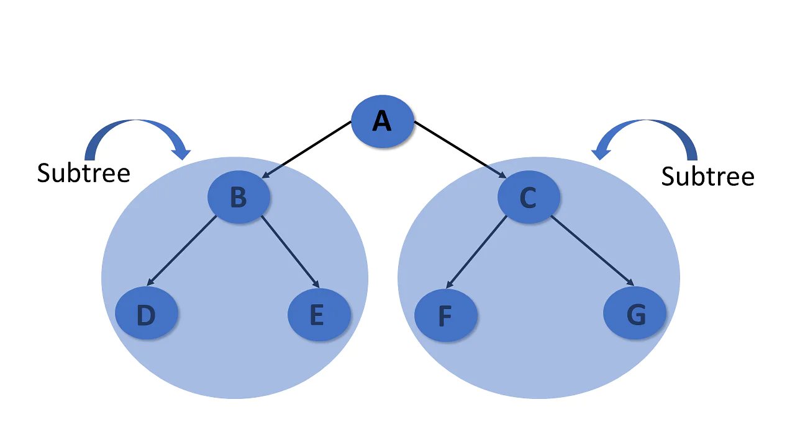

The tree is a nonlinear hierarchical data structure and comprises a collection of entities known as nodes. It connects each node in the tree data structure using "edges”, both directed and undirected.
The image below represents the tree data structure. The blue-colored circles depict the nodes of the tree and the black lines connecting each node with another are called edges.
The Necessity for a Tree in Data Structures
Other data structures like arrays, linked-list, stacks, and queues are linear data structures, and all these data structures store data in sequential order. Time complexity increases with increasing data size to perform operations like insertion and deletion on these linear data structures. But it is not acceptable for today's world of computation.
The non-linear structure of trees enhances the data storing, data accessing, and manipulation processes by employing advanced control methods traversal through it.
Terminologies of TREE
Some terminologies of data structure are:
Tree Node
A node is a structure that contains a key or value and pointers in its child node in the tree data structure.
In the tree data structure, you can define the tree node as follows.
In a tree data structure, the root is the first node of the tree. The root node is the initial node of the tree in data structures.
In the tree data structure, there must be only one root node
Edge
In a tree in data structures, the connecting link of any two nodes is called the edge of the tree data structure.
In the tree data structure, N number of nodes connecting with N -1 number of edges.
Parent
In the tree in data structures, the node that is the predecessor of any node is known as a parent node, or a node with a branch from itself to any other successive node is called the parent node.
Child
The node, a descendant of any node, is known as child nodes in data structures.
In a tree, any number of parent nodes can have any number of child nodes.
In a tree, every node except the root node is a child node.
Siblings
In trees in the data structure, nodes that belong to the same parent are called siblings
Leaf
Trees in the data structure, the node with no child, is known as a leaf node.
In a tree, any number of parent nodes can have any number of child nodes.
In trees, leaf nodes are also called external nodes or terminal nodes.
Internal nodes
Trees in the data structure have at least one child node known as internal nodes.
In trees, nodes other than leaf nodes are internal nodes.
Sometimes root nodes are also called internal nodes if the tree has more than one node.
Height
In a tree data structure, the number of edges from the leaf node to the particular node in the longest path is known as the height of that node.
In the tree, the height of the root node is called "Height of Tree".
The tree height of all leaf nodes is 0.
Level
In tree data structures, the root node is said to be at level 0, and the root node's children are at level 1, and the children of that node at level 1 will be level 2, and so on
SUBTREE
In the tree in data structures, each child from a node shapes a sub-tree recursively and every child in the tree will form a sub-tree on its parent node.

Depth
In a tree, many edges from the root node to the particular node are called the depth of the tree.
In the tree, the total number of edges from the root node to the leaf node in the longest path is known as "Depth of Tree".
In the tree data structures, the depth of the root node is 0.
Types of Tree in Data Structures
Here are the different kinds of tree in data structures:
General Tree
The general tree is the type of tree where there are no constraints on the hierarchical structure.
Properties
The general tree follows all properties of the tree data structure.
A node can have any number of nodes.
Binary Tree
A binary tree has the following properties:
Properties
Follows all properties of the tree data structure.
Binary trees can have at most two child nodes.
These two children are called the left child and the right child.
Binary SearchTree
A binary search tree is a type of tree that is a more constricted extension of a binary tree data structure.
Properties
Follows all properties of the tree data structure.
The binary search tree has a unique property known as the binary search property. This states that the value of a left child node of the tree should be less than or equal to the parent node value of the tree. And the value of the right child node should be greater than or equal to the parent value.
AVL Tree
An AVL tree is a type of tree that is a self-balancing binary search tree.
Properties
Follows all properties of the tree data structure.
Self-balancing.
Each node stores a value called a balanced factor, which is the difference in the height of the left sub-tree and right sub-tree.
All the nodes in the AVL tree must have a balance factor of -1, 0, and 1.